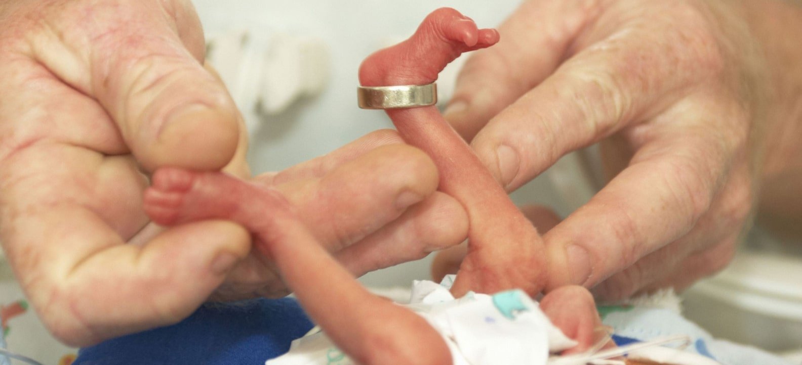
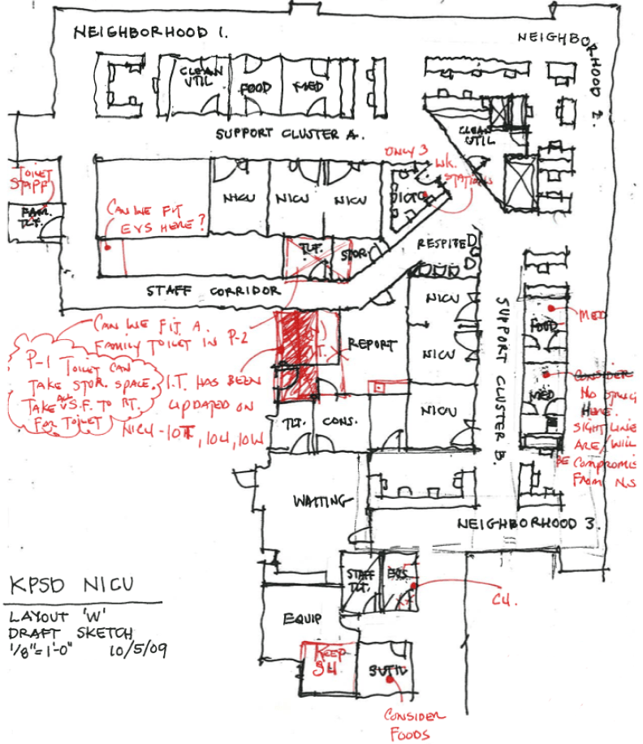
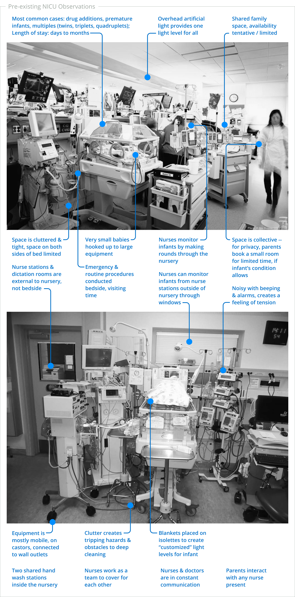

| Project: | Healthcare • Build Environment |
| Scope: | UX Research • Design • Permits • Construction |
| Roles: |
|
| Tools: | AutoCad • Adobe Suite |
| Year: | 2010-2012 |
Isabella was taken directly into the Kaiser Neonatal ICU, born at just 22 weeks with a 1% chance to live. Months later when she “graduated,” her parents credited the NICU design, in part, for her survival.

Kaiser wanted to replace a 5,000 square foot traditional open-ward Neonatal ICU nursery at San Diego Medical Center with a radically different family-centered model, pioneering private patient rooms. I was a part of the core architecture team that designed this new approach to NICUs, rooted in extensive research by medical experts.
The new NICU, three times the size of the original, continues to help care teams save lives. Our work improved patient care and established new precedents with regulatory bodies, paving the path for more of its kind.
The NICU was the stage-set for a host of characters, each with different -- and often competing -- concerns to be balanced. Each role was unique and critical.
One of my central responsibilities was to advocate for the end-users within a systems-dominated, technology-heavy space. Our human-centered design approach prioritized the end-users’ experiences along with — not secondary to — life-saving systems and technology.
Primary users: Patients, Caretakers, Neonatologists, Nurse staff, Respiratory Therapists
Secondary users: Families, Specialists, Facilities Engineers, Infection Control, IT, Volunteers
Business Stakeholders: San Diego Medical Center, Kaiser National Facilities Services
I co-led weekly user-group meetings, reviewing workflows directly with the representatives of the staff who would use the space. We found that informal work-sessions invited the best input. We proposed changes and posed questions to the user groups to sketch out solutions together, and solicited feedback that we folded in to new iterations. User-based input further helped us communicate design intent with engineering teams, and helped us furnish materials to business stakeholders to validate need and secure funding internally.
We also learned, through our weekly work sessions and visits to the space, which existing conditions worked well for the various end-users, which conditions could be prioritized for improvement by architectural intervention, and how equipment and workflow affected the use of the space.
The NICU was one of 7 phases for a new Birthing Center. This required major shifts to the floor plans. Business stakeholders were concerned with (1) the hospital safely functioning through construction phases without disturbing patients, and (2) keeping as many beds available as possible. We helped them strategize interventions, both spatially and temporally, through diagrams. I updated these weekly for review.
We created a space that aligned patient and care team needs safely, within stringent regulatory and business requirements. Specifically, we:
Reported by Marcella Lee, CBS Channel 8 San Diego Evening News
Left: "Tiny miracle baby finally big enough to go home" March 14, 2014 | Right: "Tiny miracle baby is now five years old" December 20, 2018
Kaiser Foundation
David Cross
Barbara Hartnett
Isaias Salazar
Design
Marc Davidson
Leslie Fishburn
Esther Gonzales-Parber
Nilpa Jhaveri
Demetrios Kanakis
David Noferi
Nate Chiappa
Ryan Combies
April Fame
Nilpa Jhaveri
Demetrios Kanakis
Hattem Nigma
Wonson Shortes
Anthony Tan,
Mike Villaluna
Engineering
KPFF - Structural
Randall Lamb - Mech. / Plum. / Elec.
Safir Rosetti - Low-voltage & Security
AON - Fire Alarm & Suppression